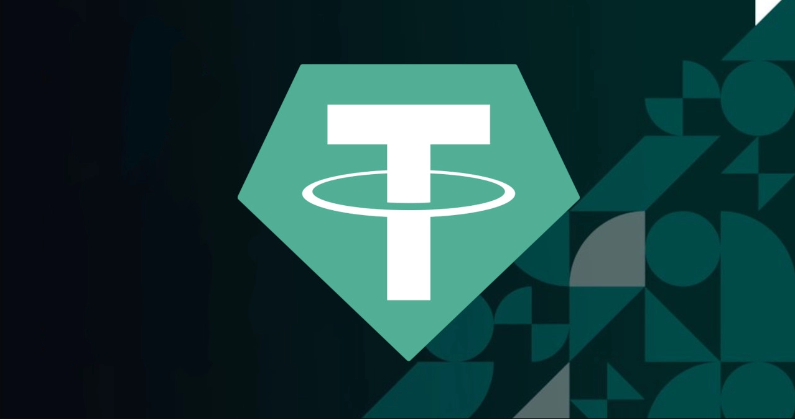

Contato
Sobre
Tether
O Tether (USDT) é uma stablecoin (criptomoeda com lastro em uma moeda física) lançada em 2014 com uma proposta de paridade com o dólar dos Estados Unidos. Sendo assim um ativo completamente diferente dos tradicionais Bitcoin, Ethereum e Ripple, por exemplo
Sua proposta é que para Tether emitido, haverá um dólar equivalente em caixa. Porém, desde o seu lançamento, muitos especialistas questionam esta paridade, já que a empresa não mostrava provas de que seguia esta paridade. Em 2019, foi anunciado que não são 100% dos Tether que são lastreados com o dólar. Atualmente existem mais de 4 bilhões de Tether em circulação
Por conta de sua estabilidade de preço, o Tether se tornou uma ótima opção para transferências entre sistemas e com diferentes criptomoedas. Com isso, os usuários conseguem fugir da volatilidade de outros ativos e não correm riscos de perdas significativas enquanto realizam as operações.
O preço do Tether está sempre atrelado ao dólar dos EUA, por isso ele sempre vai valer US$1 por token. Com isso em mente, os brasileiros que querem investir na moeda precisam levar em consideração o preço do dólar no par com o real.
A cotação do Tether sempre se manteve estável desde a sua criação, com poucas exceções quando algumas operações com o Bitcoin acabaram levando o preço da moeda para cima ou para baixo, mas sempre com uma normalização do valor.